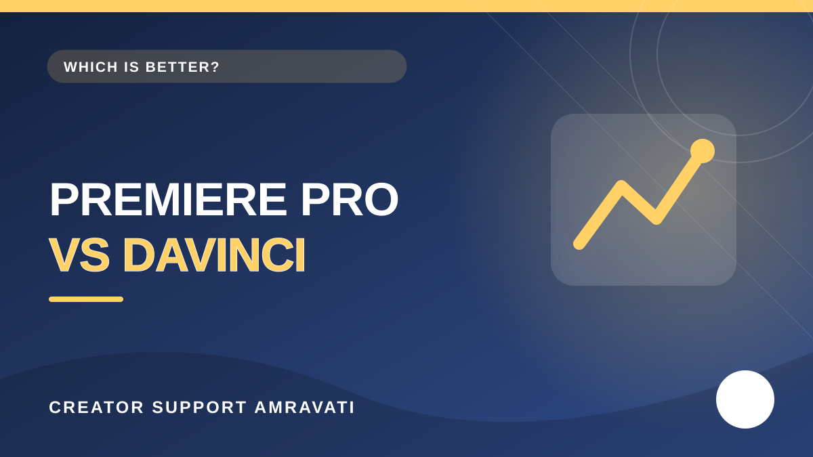

Adobe Premiere Pro and DaVinci Resolve are both widely used desktop video editing applications, but they suit different workflows and budgets. The right choice depends on the type of projects you edit, the other tools your team uses, your computer hardware and whether subscription or licence costs fit your work.
Quick comparison
| Area | Premiere Pro | DaVinci Resolve |
|---|---|---|
| Editing workflow | Timeline-based editing integrated with Adobe ecosystem | Editing page plus dedicated post-production pages |
| Colour | Colour tools within the editor | Dedicated colour page and grading workflow |
| Audio | Integrated audio workflow and Adobe ecosystem options | Fairlight audio page |
| Cost model | Subscription plans | Free version and paid Studio licence |
| Hardware | Depends on codecs, effects and project complexity | Can be demanding, especially with effects and high-resolution media |
When Premiere Pro may suit you
Premiere Pro can be a good fit when your workflow already uses Adobe applications, shared project files, templates or team processes built around Adobe. It may be practical for editors who regularly move assets between applications. Confirm the current subscription price, plan terms, supported formats and hardware requirements in your region.
When DaVinci Resolve may suit you
Resolve is worth evaluating if colour grading, audio post-production and an integrated finishing workflow are important. Its free edition can be a strong starting point, while the Studio version adds paid features. Check the current feature comparison and system requirements before deciding.
Which is better for YouTube videos?
Both can edit YouTube videos. A talking-head tutorial may need clean cuts, screen recordings, titles and balanced dialogue. A documentary-style video may need more complex colour and audio work. Choose the application that lets you organise media, make revisions and export reliably.
Which is better for Reels and Shorts?
Both can create vertical sequences. Set the correct sequence dimensions, keep important text away from interface overlays, and check captions on a phone. If you produce many short clips from one long recording, build a repeatable template and naming system.
Hardware matters more than brand loyalty
Before installing either editor, compare your PC with the official requirements. CPU, GPU, RAM, storage speed and media codec all influence performance. A computer that struggles with multiple 4K streams may benefit from proxy media or optimised media. Test the same source clip in both applications and compare timeline playback, render time and export quality.
A practical decision test
- Choose a representative 4K or 1080p source clip from your real projects.
- Create a 60-second edit with titles, music, dialogue and colour correction.
- Export using the same resolution and frame rate.
- Compare playback, render time, audio quality and file size.
- Check whether your collaborators can open and revise the project.
- Calculate the ongoing software cost and any plugin or storage expenses.
Frequently asked questions
Is DaVinci Resolve free?
Resolve has a free version and a paid Studio version. Feature availability can change; consult the official Blackmagic Design comparison.
Is Premiere Pro better than Resolve?
Not universally. Premiere may fit Adobe-centred workflows; Resolve may fit users who value its integrated colour and audio pages. Test your own work.
Which is easier for beginners?
Ease depends on your previous experience and the task. Start with a simple project and learn the editing basics before choosing based on advanced features.
Need an editor to handle your footage? Explore CSA video editing services or contact us.
← Back to all articles · Video editing service · Contact CSA